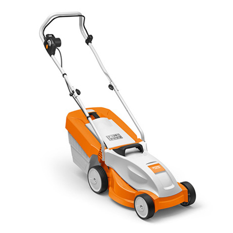
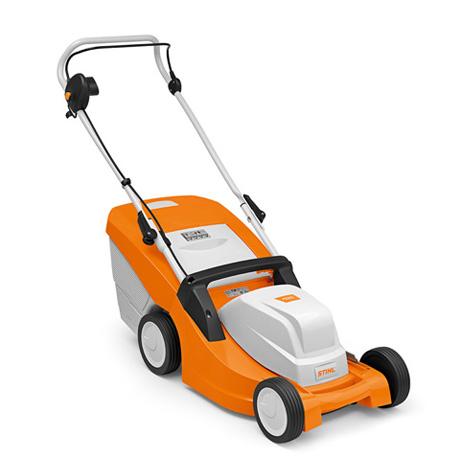
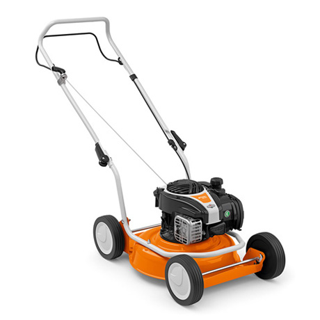
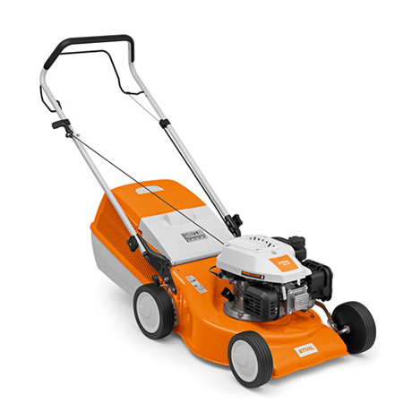
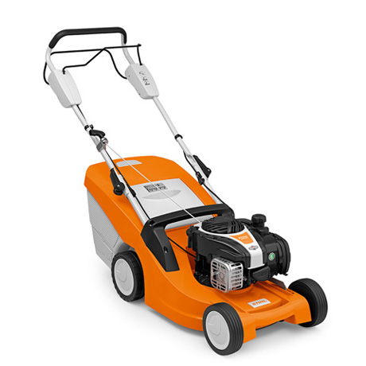
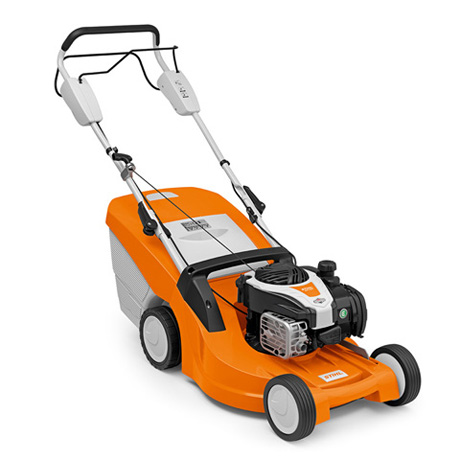
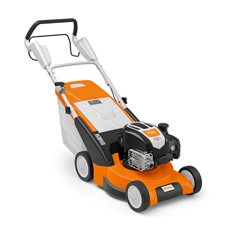

* Важливо! Всі ціни, будь ласка,уточнюйте у продавця.
Stihl RME 235
- Потужність: 1,2 кВт
- Ширина скошуваня: 33 см
- Об'єм кошика для трави: 30 л
- Площа газону: до 300 м²
3 629 * грн
Замовити
Stihl RME 443
- Потужність: 1,5 кВт
- Ширина скошуваня: 41 см
- Об'єм кошика для трави: 55 л
- Площа газону: до 600 м²
8 079 * грн
Замовити
Stihl RME 545
- Потужність: 1,6 кВт
- Ширина скошуваня: 43 см
- Об'єм кошика для трави: 60 л
- Площа газону: до 800 м²
9 089 * грн
Замовити
Stihl RM 2 R
- Потужність: 2,1 кВт
- Ширина скошуваня: 46 см
- Висота скошування: 25-85 мм
8 789 * грн
Замовити
Stihl RM 248
- Потужність: 2,1 кВт
- Ширина скошуваня: 46 см
- Висота скошування: 25-75 мм
- Об'єм кошика для трави: 55 л
8 279 * грн
Замовити
Stihl RM 443 T
- Потужність: 2,1 кВт
- Ширина скошуваня: 41 см
- Висота скошування: 25-75 мм
- Об'єм кошика для трави: 55 л
13 939 * грн
Замовити
Stihl RM 448 T
- Потужність: 2,1 кВт
- Ширина скошуваня: 46 см
- Висота скошування: 25-75 мм
- Об'єм кошика для трави: 55 л
15 149 * грн
Замовити
Stihl RM 545
- Потужність: 2,4 кВт
- Ширина скошуваня: 43 см
- Висота скошування: 25-80 мм
- Об'єм кошика для трави: 60 л
15 549 * грн
Замовити
Stihl RM 545 VR
- Потужність: 2,4 кВт
- Ширина скошуваня: 43 см
- Висота скошування: 25-75 мм
- Об'єм кошика для трави: 60 л
19 189 * грн
Замовити